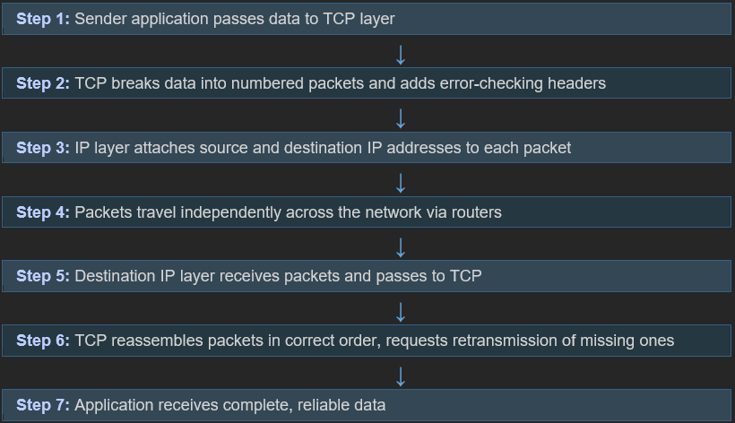

TCP/IP is the foundational communication protocol suite that enables computers worldwide to communicate with each other over the Internet. It is a set of rules (protocols) that govern how data is sent, routed, and received across interconnected networks. TCP/IP is designed to be robust, scalable, and flexible, allowing it to support a wide range of applications and services.
The Two Core Protocols
IP (Internet Protocol) - Responsible for addressing and routing packets of data. Every device is assigned a unique IP address that identifies its location on the network.
TCP (Transmission Control Protocol) - Ensures reliable, ordered, and error-checked delivery of data between applications. It breaks data into packets, numbers them, and reassembles them at the destination.
How TCP/IP Works — Diagram
